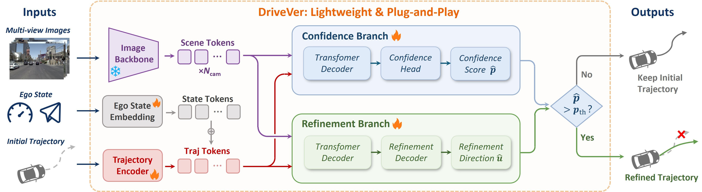
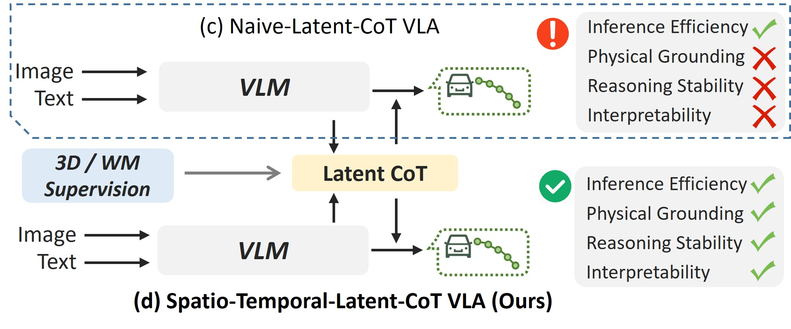
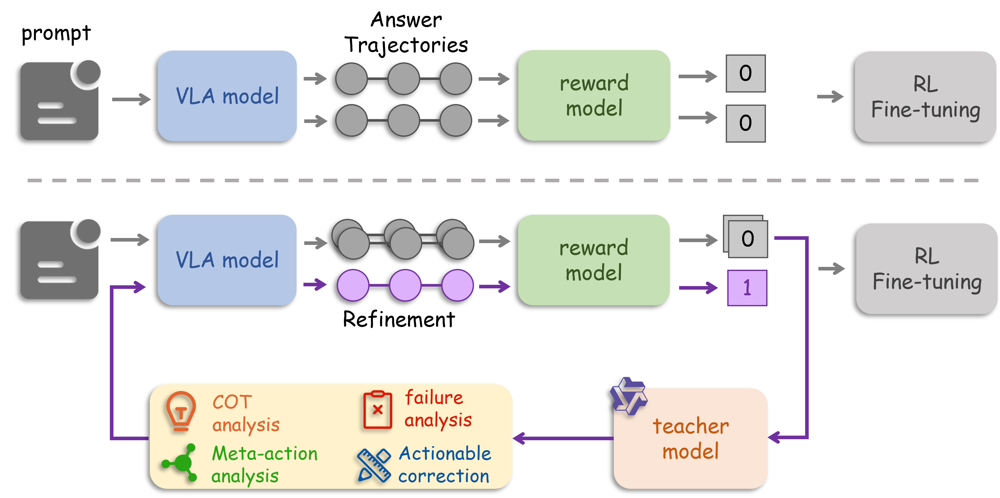
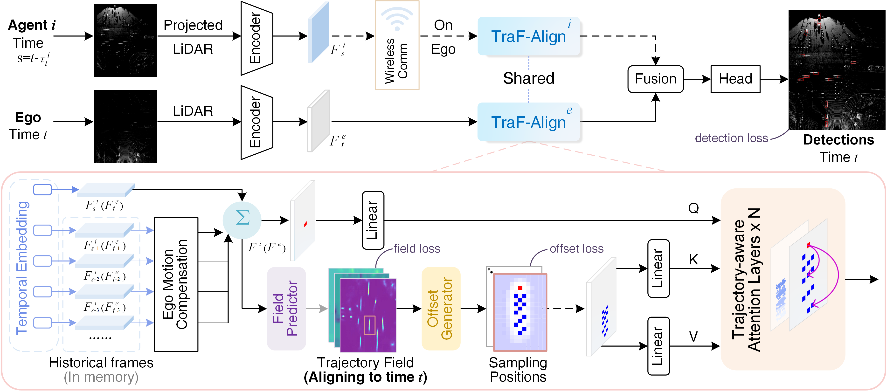

Fuxi Wen
Contact
Lee Shau-Kee Science and Technology Building A535, Tsinghua University
Haidian District, Beijing 100084, China
✉ Email: wenfuxi@tsinghua.edu.cn
Research Interest
Recent Highlights
📢 1. DriveVer: Lightweight Trajectory Evaluator as Test-Time Verifier for Autonomous Driving @ IROS 2026 by He Cong
|
 |
End-to-end autonomous driving models often encounter performance bottlenecks, as training-time scaling leads
to high computational costs and diminishing marginal returns. Existing planners typically adopt a one-shot generation
paradigm, lacking secondary validation and active correction
mechanisms to detect and revise suboptimal or unsafe trajectories during inference.
To address this issue, we propose
DriveVer, a lightweight, plug-and-play Test-Time Verifier that
leverages the test-time scaling paradigm to enable autonomous
driving systems to validate and refine trajectories without costly
and heavy training. We construct a dedicated trajectory dataset
based on the NAVSIM benchmark through condition-driven
clustering and balanced sampling according to ego-vehicle
states and navigation commands. Employing a dual-head architecture, DriveVer efficiently fuses candidate trajectories with
multi-view visual representations and ego-vehicle kinematic
features to simultaneously predict a safety confidence score and
an absolute geometric refinement vector.
|
📢 2. LaST-VLA: Thinking in Latent Spatio-Temporal Space for Vision-Language-Action in Autonomous Driving @ NeurIPS 2026 by Luo Yuechen
|
 |
Vision-Language-Action (VLA) models have revolutionized autonomous
driving by unifying perception and planning, their reliance on explicit textual
Chain-of-Thought (CoT) leads to semantic-perceptual decoupling and perceptual-symbolic conflicts. Recent shifts toward latent reasoning attempt to bypass these
bottlenecks by thinking in continuous hidden space. However, without explicit intermediate constraints, standard latent CoT often operates as a physics-agnostic representation.
In this work, we introduced LaST-VLA, a framework that shifts the reasoning paradigm of autonomous driving from explicit text to a continuous Latent Spatio-Temporal Space. By distilling
physical priors from 3D and video foundation models, our approach effectively addresses the challenges of inference latency, semantic hallucinations, and the lack of physical grounding inherent to
textual CoT. Coupled with a progressive training strategy and GRPO, LaST-VLA achieves SOTA
performance on NAVSIM, SURDS and NuDynamics benchmarks. These results demonstrate that
aligning latent thinking with physical reality significantly enhances the robustness, efficiency, and
safety of VLA-based planning.
|
📢 3. Unleashing VLA Potentials in Autonomous Driving via Explicit Learning from Failures @ CVPR 2026 by Luo Yuechen
|
 |
Vision-Language-Action (VLA) models for autonomous
driving often hit a performance plateau during Reinforcement Learning (RL) optimization. This stagnation arises
from exploration capabilities constrained by previous Supervised Fine-Tuning (SFT), leading to “persistent failures” in long-tail scenarios. In these critical situations, all explored actions yield a zero-value driving score. This
information-sparse reward signals a failure, yet fails to
identify its root cause—whether it is due to incorrect planning, flawed reasoning, or poor trajectory execution.
To
address this limitation, we propose VLA with Explicit
Learning from Failures (ELF-VLA), a framework that augments RL with structured diagnostic feedback. Instead of
relying on a vague scalar reward, our method produces detailed, interpretable reports that identify the specific failure mode. The VLA policy then leverages this explicit feedback to generate a Feedback-Guided Refinement. By injecting these corrected, high-reward samples back into the
RL training batch, our approach provides a targeted gradient, which enables the policy to solve critical scenarios
that unguided exploration cannot. Extensive experiments
demonstrate that our method unlocks the latent capabilities
of VLA models, achieving state-of-the-art (SOTA) performance on the public NAVSIM benchmark for overall PDMS,
EPDMS and high-level planning accuracy.
|
📢 4. TraF-Align: Trajectory-aware Feature Alignment for Asynchronous Multi-agent Perception @ CVPR 2025 by Song Zhiying
|
 |
Cooperative perception presents significant potential for
enhancing the sensing capabilities of individual vehicles,
however, inter-agent latency remains a critical challenge.
Latencies cause misalignments in both spatial and semantic features, complicating the fusion of real-time observa-
tions from the ego vehicle with delayed data from others.
To address these issues, we propose TraF-Align, a novel
framework that learns the flow path of features by predicting the feature-level trajectory of objects from past obser-
vations up to the ego vehicle’s current time. By generating temporally ordered sampling points along these paths,
TraF-Align directs attention from the current-time query
to relevant historical features along each trajectory, supporting the reconstruction of current-time features and pro-
moting semantic interaction across multiple frames. This
approach corrects spatial misalignment and ensures semantic consistency across agents, effectively compensating
for motion and achieving coherent feature fusion. Experiments on two real-world datasets, V2V4Real and DAIR-
V2X-Seq, show that TraF-Align sets a new benchmark for
asynchronous cooperative perception.
The code is available at https:github.comzhyingSTraF-Align.
|
|